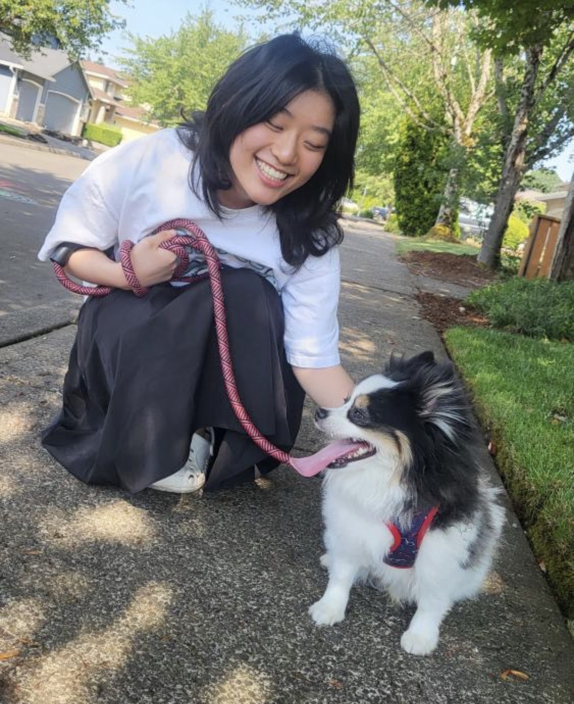
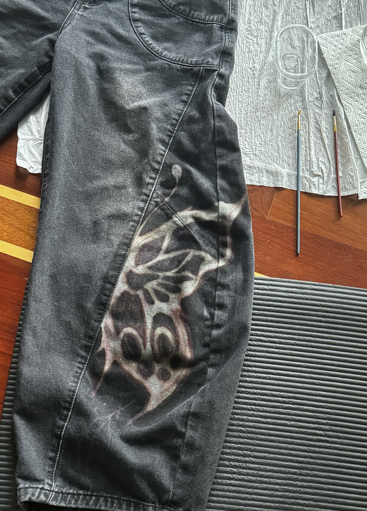
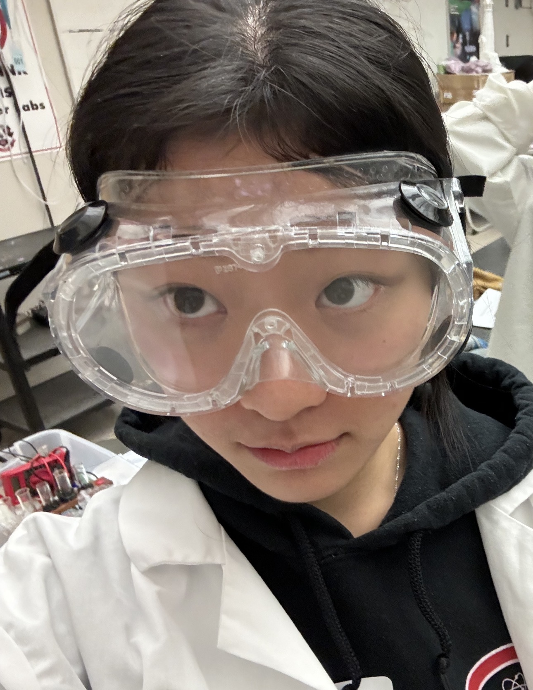
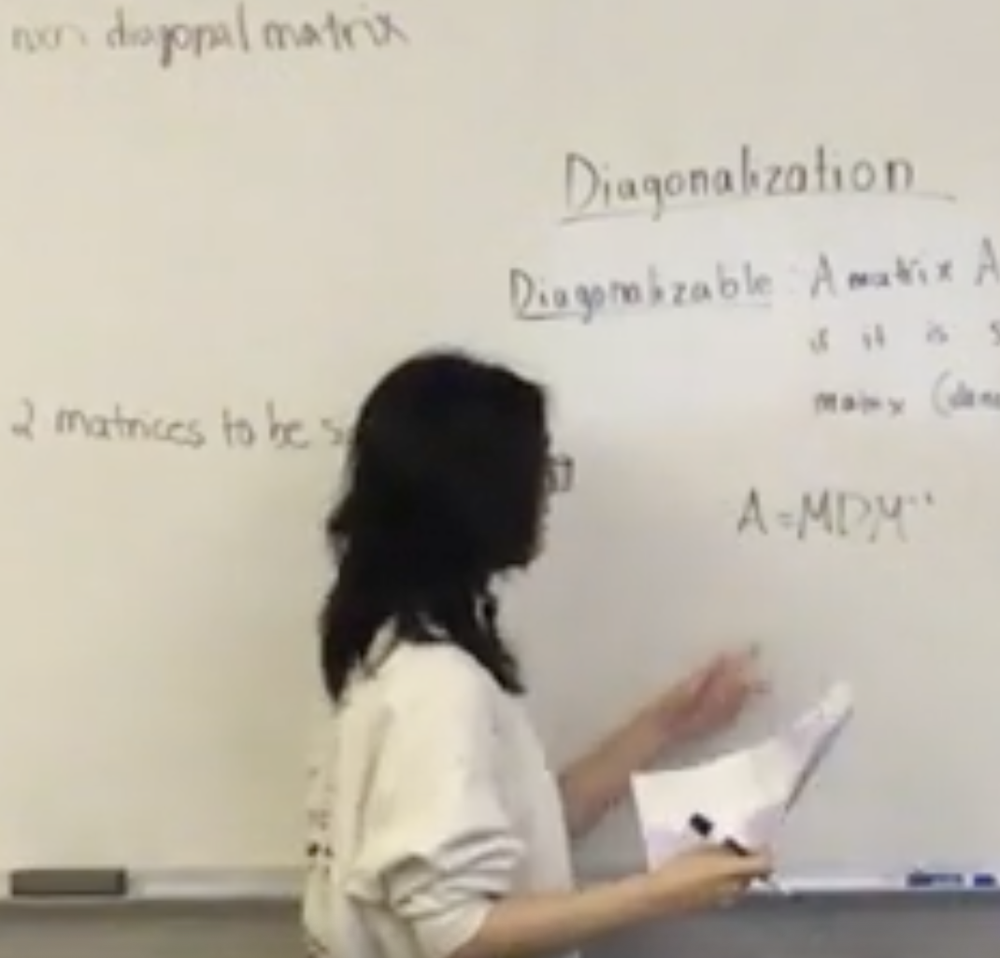

By: Cheryl Li
DXARTS 200A: Assignment #2
I am Asian American with first-generation Chinese immigrant parents. My parents knew not of freedom, only sacrifice. I know of freedom. I am privileged.
My mii at age 7 had blonde pigtails and big blue eyes. Pale, white skin. A reflection of everyone in my class but me. I knew early on what it meant to be different. I also knew what it meant to be different from what was expected of me.
First, I wanted to be a . I would be dressed in blue scrubs, carry a stethoscope, and spend hours with animals. I’d have a nice, hot cup of black coffee every morning as I ride my bike to the animal clinic, ready to spend a day with dogs, cats, or maybe even an exotic parrot. I’d give the new puppy a pup cup after their set of vaccination shots and give old Megatron the cat extra cuddles each time he comes in, knowing I’m doing my best at suppressing his cancer. But “You’ll be making pennies” was what my parents said. I understood, “You shouldn’t do that.”
Second, I wanted to be a . I would stand in front of children and share knowledge with them for eight hours a day to see the lightbulbs in their heads turn on at the same time as their toothy grin. I would decorate my classroom with bright, rainbow colors and use a sparkly finger pointer when presenting at the front board. My students would be let out five minutes early for lunch and recess. But “Why would you want to be a teacher?” was what my parents questioned. I understood, “You shouldn’t do that.”
Third, I wanted to be a . I would sketch up fancy ballgowns, adorned with the finest jewels in the world. I’d get to travel the world and meet models and designers all over, bonding over our passion in exploring foreign fashion design. I’d dress up and admire my designs walk runways, gaining recognition and fame worldwide. I’d be a superstar. But I didn’t tell my parents about this dream, because I already understood “I can't do this.”
Fourth, I tried to be a I studied biology and chemistry hard. I volunteered at my local hospital. I'd interacted with my patients with the biggest, reassuring smile. I’d be doing patient rounds, writing doctor’s notes, and telling patients' family members that surgery was successful. I’d dedicate my life to crucial surgeries, curing diseases, and medical research. I would dedicate my life to saving others’ lives, an exchange of my life to chase someone else’s dream. Maybe one day, I’d be proud of myself for making my parents proud. But I already understood understood “I shouldn't do this" because my heart wasn't in it.
But what was my heart in?



